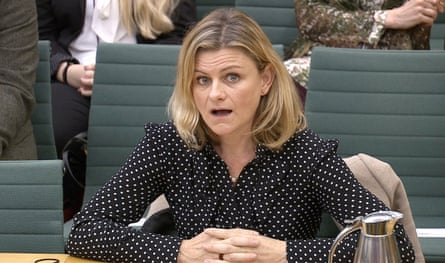
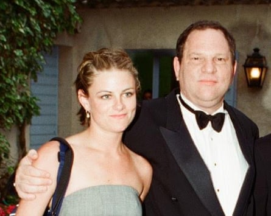

Z elda Perkins was 24 when – exhausted, broken and surrounded by lawyers – she finally agreed to sign the non-disclosure agreement (NDA) that would legally gag her from talking about Harvey Weinstein’s sexually predatory and abusive behaviour. The suffocating power of that document haunted her for decades, casting a long shadow over her life and making her ill.
“If I go back to that room, I did not ever imagine that it would be possible to reach any form of justice,” she says. Now, eight years since she first broke her NDA and inadvertently became the world’s leading campaigner against them, Perkins feels justice may finally be within her grasp. On Monday, in a move that surprised even the most committed campaigners, the UK government announced sweeping measures that will prohibit bosses from using NDAs to silence abused employees.
The following day, Perkins is still digesting the news, but her delight is palpable. “This is huge,” she says. “It’s the beginning of abusers having to change their behaviour – not because somebody’s wagging a finger at them, not because they are told to, but because they have to. There’s nowhere for them to hide any more, they just have to effing behave themselves.”
The government’s stance has, she happily admits, gone beyond her expectations. If unchanged, the new measures will protect gig-economy workers as well as staff, requests for NDAs will be able to come only from complainants, not employers, and workers will be given access to legal advice. Crucially, “non-disparagement clauses” (widely used since non-disclosure became a “dirty word”, says Perkins) will be off the table in cases of abuse.
“It’s really, really ambitious; if they actually do what they say they’re going to do, it is totally world-leading,” says Perkins, who set up the Can’t Buy My Silence campaign in the UK to lead the fight against abusive NDAs in 2021. The campaign argued that while NDAs may be necessary for intellectual property or commercially sensitive information, they have become a routinely used weapon to silence victims of bullying, sexual harassment or abuse, especially in lower-income sectors like retail and hospitality.
“I’m super excited in a way I haven’t felt before, because I feel like I can almost smell freedom,” she says. “But the reality is this is the first step in quite a long parliamentary process. Tomorrow it is absolutely back to the grindstone, because this isn’t done yet.”
Zelda Perkins speaks to parliament’s women and equalities committee in 2018.Photograph: Reuters
With inclusion and diversity under attack by Donald Trump’s administration, the move is also globally significant, Perkins argues. Legislation has changed in more than 27 US states, a Canadian province and the Republic of Ireland – but companies are feeling nervous.
Recently, two global corporations who signed up to Can’t Buy My Silence’s pledge not to use NDAs in cases of abuse, did not want to publicise the fact, for fear of it is being reversed. “With DEI being rolled back, Britain leading the way here is pretty bloody huge,” she says. “There’s part of me that is scared of highlighting that because I don’t want to scare the horses. But essentially, this is actually now much more important than it ever has been.”
It is also a moment of huge personal significance. Perkins never wanted to be a campaigner – she just felt, finally, as if she had no other choice. “I’m the most accidental activist that ever walked the earth,” she says. “I’ve literally spent my whole time trying not to do it.
“At 24 when I went to the lawyers, I thought: if I tell the grownups, then they’ll sort it out.”
She felt the same when she spoke to the New York Times’ Jodi Kantor about Weinstein eight years ago, breaking her NDA and sparking a chain reaction that would eventually lead to his incarceration.
“But what I didn’t realise in 2017, when I was 45, was that I was a grownup,” she says. “Because I’d been silent for 23 years, I thought nobody could hear me or see me, and I was stupid. I did not believe that I had any right or power to make any change.”
When the change she wanted – even expected – to see didn’t happen, she kept going. She enlisted a “ferocious team of female allies” across the campaigning and political sphere – including, but not limited to, the former Conservative minister Maria Miller, Labour’s Jess Phillips and Louise Haigh, and the Liberal Democrats’ Layla Moran in the House of Commons, Helena Morrissey and Helena Kennedy in the Lords, the former TUC boss Frances O’Grady in the unions and Joeli Brearley, founder of Pregnant Then Screwed, on the campaign front. She kept going.
“It’s funny because everyone goes: ‘Oh you’re so brave for breaking your NDA’ – none of that was brave,” she says. “I tell you what’s brave: every single campaigner getting up every morning when you’re on your own and continuing to fight the system with no remuneration, no encouragement, and nobody really there to hold your hand. That’s brave.”
But there is a reason she, and others, fight on. “Being able to make change is the biggest, most fulfilling thing any of us can do. We’re all looking to be part of a bigger thing,” she says. “I’m very lucky to have been able to turn something so negative into a positive, because 90% of women who’ve been in these situations don’t get to do that and that’s really why this win is much more for them than me.”
Perkins with Harvey Weinstein at Cannes film festival, 1998.Photograph: Alan Davidson/REX/Shutterstock
Still, the fight – and the exposure – took its toll. At the start of the year a series of false dawns had left her disheartened and demoralised. The support of Haigh and a group of high-profile baronesses in the Lords changed the dynamic, but when she got a call from government aides about the amendments on Friday, before a meeting with the business minister Justin Madders on Monday, she expected the worst. “I was like: ‘Oh God, here we go. They want to break it to me softly to make sure that I don’t cry in the meeting.’”
The news, they assured her, was definitely positive. On Monday she travelled to Westminster and found herself back in a room of power, but this time she was part of it. “Without sounding woo woo, that has been the healing part,” she says. “As corny as it sounds, this has made me acknowledge the privilege of living in a democracy. It’s tough, and yes, the buttons are sticky and the levers are rusty, but they do actually work.”
So what is next for the woman – part of a vanishingly rare breed – who took on power across multiple fronts and actually won? She will, she promises, continue to buzz around the government like a committed gnat, determined to see this through. Then, maybe, a rest. “Since the story broke in 2017 it’s been a maelstrom,” she says. “Like I was attached to a surfboard but sort of under the water most of the time. I’m now on the surfboard, but really knackered – and I’d just like to get off and go and lie on the beach.”